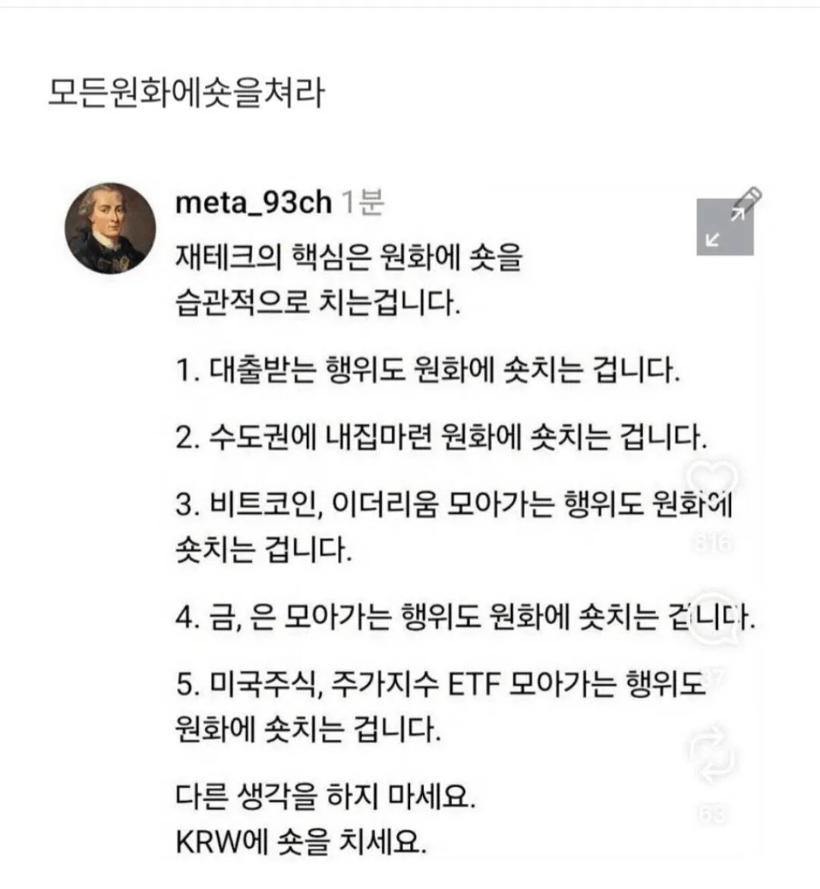

그리고 이 전략은 수십년동안 실제로 필승전략이었다..

그리고 이 전략은 수십년동안 실제로 필승전략이었다..
하지만.... 2008년쯤부터는 얼추 맞지 않아...? 기준금리 낮아지면서 금융, 실물자산에 비해 가치 방어가 너무 안됐... 하긴 다른 나라 통화도 뭐 사정 비슷하지만...
달러는 아닌줄아는건가?
뭔 바보같은 소리냐;
하락이 왜 숏이고 상승이 왜 롱이라고 불리는지 개념조차 없네 ㅋㅋㅋ
걍 당연한 소리로 개그치는데 국평오라 댓글창 풀발기중
이건 걍 원화가 아니라 모든 돈에 해당되는 이야기잖아
달러보다 원화가 가치 하락이 더 심해서 달러도 통하더만 ㅋ
돈을 들고있지 말라는 말이네
그냥 돈을써서 뭔가사면 다 숏치는거임?
다시 팔때 가치가 안떨어지는걸 사면
인플레를 헷지해라
이런짤 나올 시기 아니지 않음?
이런거 나오면 고점이던데
표현을 저지랄로 하는것도 자국혐오의 일종임
금리 상승 사이클엔 현금 들고 있는 게 안전한건감
올해 4월까지만해도 반도체에 올인했었는데 ㅋㅋㅋㅋㅋ 청년 미래적금 연 19프로라니까 우리는 하루에 19프로 먹고 싶다는 댓글 생각나네
하루에 19%를 잃게 해드리겠습니다.
그냥 병신 개소리네
원화에 숏쳐라 x
현금(달러,기축통화)에 숏쳐라 o
그냥 인플레가 있으니까 현금을 들고있는건 손해다라는말을 뭔 원화가 병신인것처럼 이야기하노